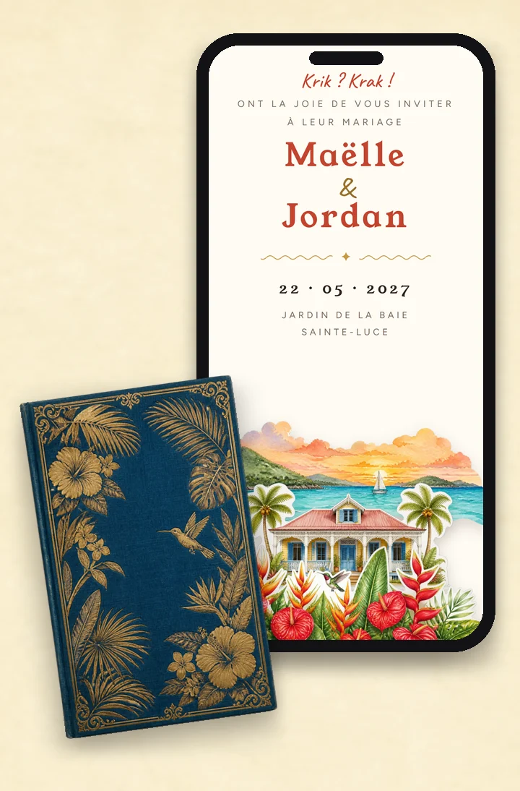
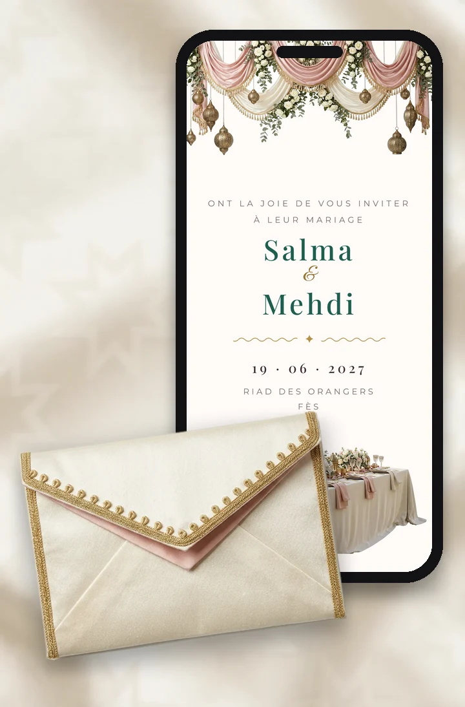
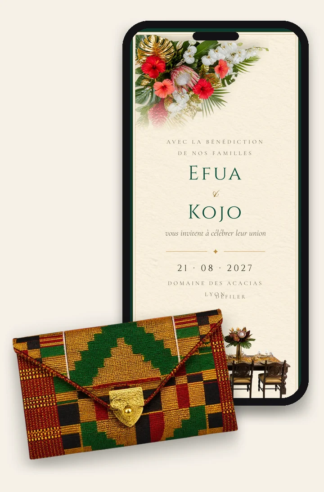
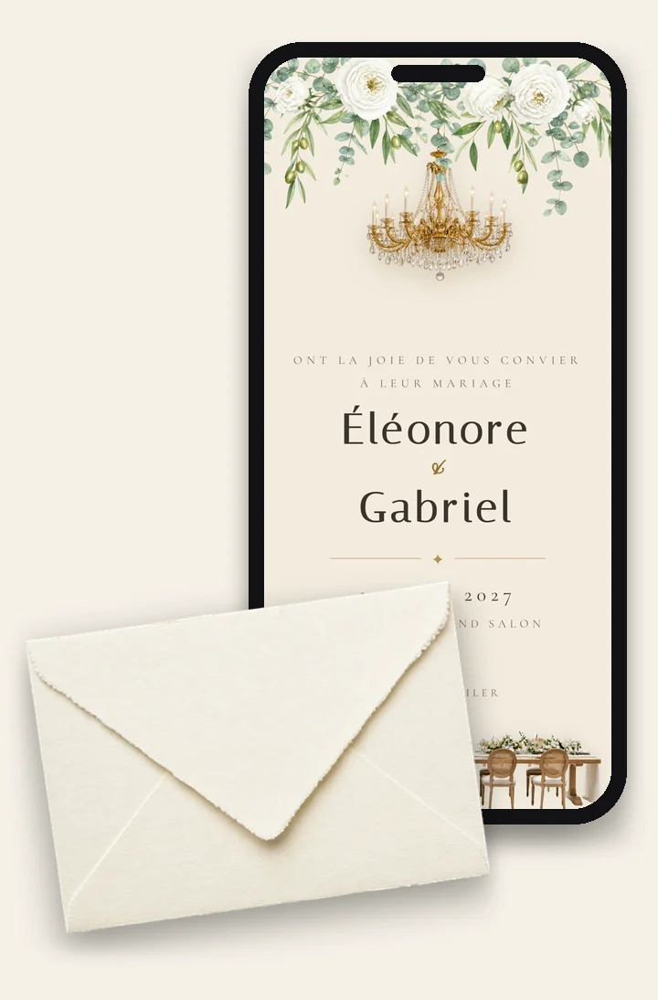
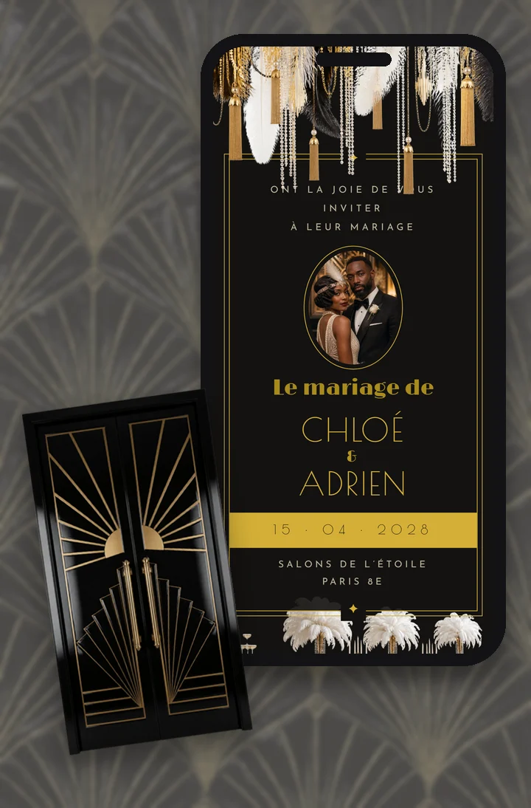

Envoyé sur WhatsApp
Un lien personnel par invité, qui s'ouvre sur le téléphone sans rien installer.
Un faire-part animé, c'est une invitation que vos invités ouvrent sur leur téléphone : l'enveloppe se descelle, la carte se déplie, la musique démarre, et vos prénoms apparaissent.
Cinquante collections, chacune avec son ouverture, sa mise en page et sa musique : lanternes au-dessus d'un lac, conte créole, takchita, kente, cachet de cire, années folles. Vous choisissez, vous mettez vos textes et vos couleurs, et chaque invité reçoit son lien à son prénom.
Créer mon espace Essayer l'espace
Gratuit jusqu'à la publication : vous préparez tout, vous ne payez qu'au moment d'envoyer le lien à vos invités.
Ouvrez-en une : vous la voyez exactement comme vos invités.





Un lien personnel par invité, qui s'ouvre sur le téléphone sans rien installer.
Qui vient, avec combien d'accompagnants, ses régimes alimentaires : tout arrive dans votre liste.
Pour les grands-parents qui préfèrent le papier : la même invitation, prête à imprimer.
Celle de la collection, une autre de notre bibliothèque, ou votre propre morceau.
Oui : il s'ouvre comme une page web, sur iPhone comme sur Android, sans application à installer.
Oui : la version à imprimer est incluse dans toutes les formules.
Oui : vous écrivez vos textes et vous choisissez parmi les nuanciers de la collection, qui garde sa direction artistique.
Rien pour préparer : vous ne payez qu'au moment d'envoyer le lien à vos invités. Les formules vont de 125 à 495 €, avec une remise de lancement pour les 50 premiers couples.
Par pays : camerounais · congolais · ivoirien · sénégalais · nigérian · ghanéen · marocain · algérien · tunisien · indien · vietnamien
Pour votre mariage : Faire-part sur WhatsApp · Le mariage en direct · Le site des invités · Le QR code à l'entrée · Le mur photo